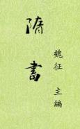

| 历史史籍 > |
| 隋书 |
| 作者：魏徵 主编 |
|
《隋书》共85卷，其中帝纪5卷、志30卷、列传50卷。记载隋文帝开皇元年（581年）至隋恭帝义宁二年（618年）共38年历史。《隋书》是现存最早的隋史专著，也是修史水平较高的史籍之一。 唐武德四年（公元621年），令狐令狐德棻提出修梁、陈、北齐、北周、隋等五朝史的建议。次年，唐朝廷命史臣编修，但数年过后，仍未成书。贞观三年（公元629年），重修五朝史，由魏征“总知其务”，并主编《隋书》。参加隋书编修的还有颜师古、孔颖达、许敬宗等人。贞观十年（636年），隋书的帝纪、列传和其他四朝史同时完成，合称“五代史”。 |
 |